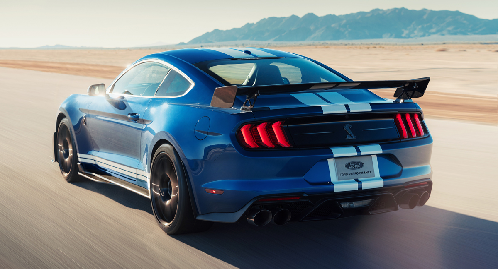
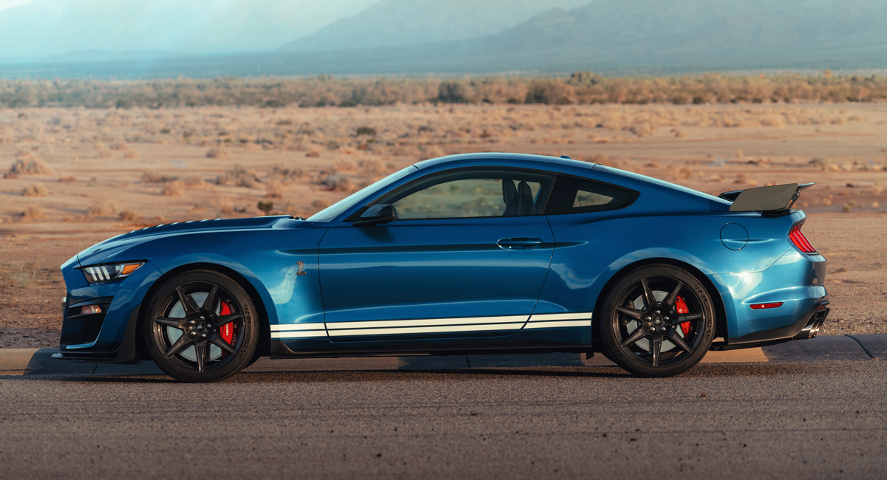
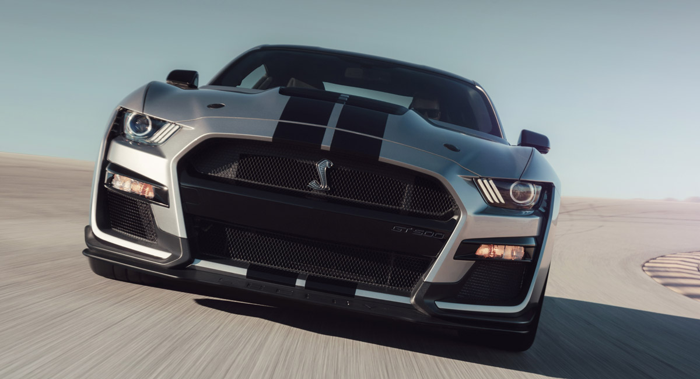

До сих пор это звание носил среднемоторный суперкар Ford GT, но теперь ему пришлось потесниться. Представленное на автосалоне в Детройте купе Ford Mustang Shelby GT500 мощнее и призвано дать бой самым экстремальным версиям пони-каров Chevrolet Camaro и Dodge Challenger.
Это всего лишь третье поколение спорткара с индексом GT500: впервые такая модель появилась в 1967 году, и ее разработкой занимался сам Кэрролл Шэлби. Новая же машина не имеет к существующей компании Shelby никакого отношения: легендарное имя использовано по лицензии, а разработкой занималось подразделение Ford Performance.
Для «пятисотого» Мустанга подготовлен двигатель под кодовым именем Predator, в основе которого лежит атмосферник Voodoo, известный по модификации GT350. Агрегат V8 5.2 оснащен приводным нагнетателем типа Roots объемом 2,65 л. Мощность должна превысить 700 «лошадей» (против 655 у модели Ford GT), но точный показатель будет обнародован позже. Динамические показатели пока тоже приблизительные: разгон до 60 миль в час (97 км/ч) занимает около 3,5 с, а четверть мили машина проезжает менее чем за 11 секунд.
